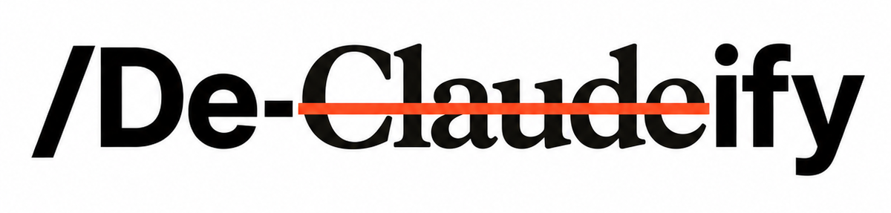

GitHubOn the left, a page the way a model builds it by default. On the right, the same page after De-Claudeify. The numbers are what the scanner finds.
0FAIL
0WARN
Scroll inside the page. Click a number to see what it is.
git clone https://github.com/julianreves/de-claudeify.git node de-claudeify/scripts/install.mjs
Then ask your agent to build a page with De-Claudeify, or to clean one you already have.
Bodega Parcela 41 is a fictional winery and every figure on these pages is invented. De-Claudeify is an independent project. It is not affiliated with or endorsed by Anthropic.